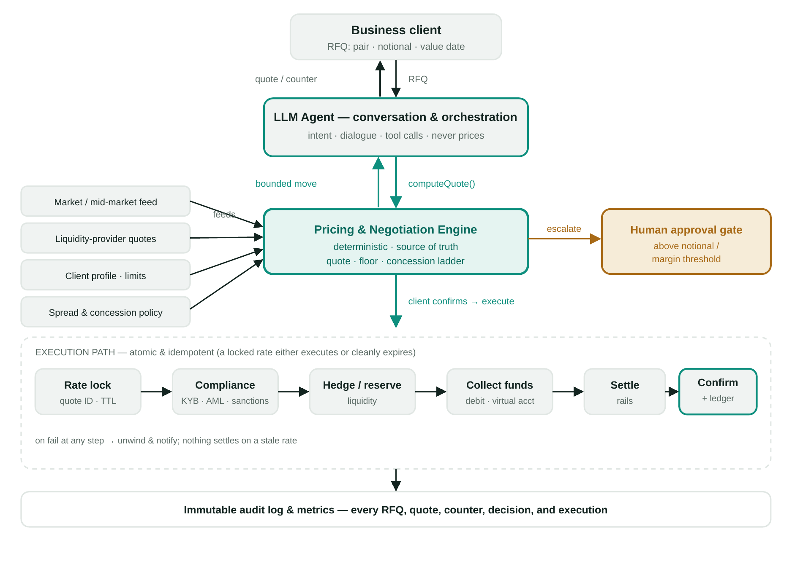

A conversational agent on the Afriex Business Portal that lets entities negotiate a rate and complete the trade in one flow, while a deterministic engine — never the LLM — owns every price.
Business clients negotiate FX and stablecoin rates today through manual, out-of-band back-and-forth — sales, chat, email. It's slow, inconsistent from one client to the next, hard to audit, and it doesn't scale: high-value clients wait for a human, small clients get no negotiation at all, and every quote ties up a person.
The prize is to let a client negotiate a rate conversationally and, once agreed, execute the trade in one continuous flow — with no human in the loop for standard deals. The danger is obvious: an AI that can both quote prices and move money is exactly where things go wrong if it's built naively.
How might we let clients negotiate and execute in one conversation, without ever letting the agent drift outside commercially safe bounds — or invent a price?
I framed the opportunity and owned the product thinking end to end as Head of Product: the problem definition, the safety model that makes an autonomous trading agent viable, the requirements, and the phased path from copilot to bounded autonomy. I produced the PRD and the architecture, and defined the guardrails and success metrics engineering and the trading desk would build against.
Negotiate a NGN → USDC rate in chat, then take the trade end-to-end: lock the rate or proceed, pay NGN into a virtual account, confirm funds, provide a USDC wallet, and get the transaction hash. The engine panel and audit log update live — the agent counters only within the concession ladder and holds firm at the floor. Toggle to the desk & engine view to see the policy the engine enforces.

The agent handles conversation; the deterministic engine owns every price. Agreed trades run a gated, atomic execution path, with a human approval gate for large or thin-margin deals — all writing to an immutable audit log.
Autonomy widens only when the prior phase's margin-integrity and reliability metrics justify it.
| Phase | Stage | What the agent does |
|---|---|---|
| 0 | Instrument | Log manual negotiations; build the pricing engine + policy as an API. No client-facing agent yet. |
| 1 | Copilot | Agent drafts quotes/counters from the engine; the desk reviews and sends. |
| 2 | Bounded autonomy | Agent negotiates directly with clients within tight policy bounds; escalates edge cases. |
| 3 | End-to-end execute | On agreement within bounds, the agent runs the full atomic execution path. |
| 4 | Optimise | Tune the concession ladder, spreads and limits from outcome data; widen autonomy where safe. |
The PRD defines what "good" looks like across coverage, speed and — above all — margin integrity. (Concept/spec stage; targets defined in the PRD.)
The full product requirements document covers the problem, goals and non-goals, users and scope, the guardrails (including Rule 0), the architecture and flow, phasing, success metrics, and key risks with mitigations.